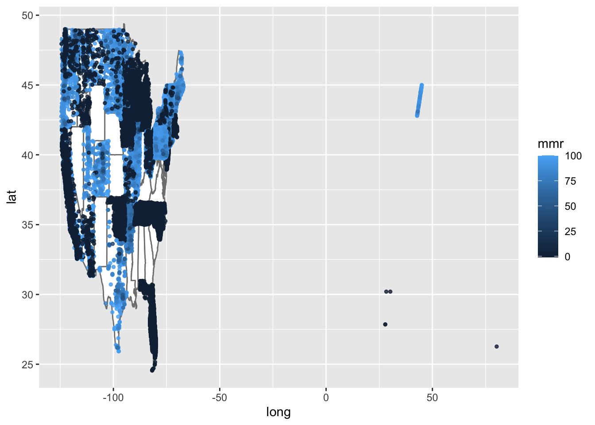
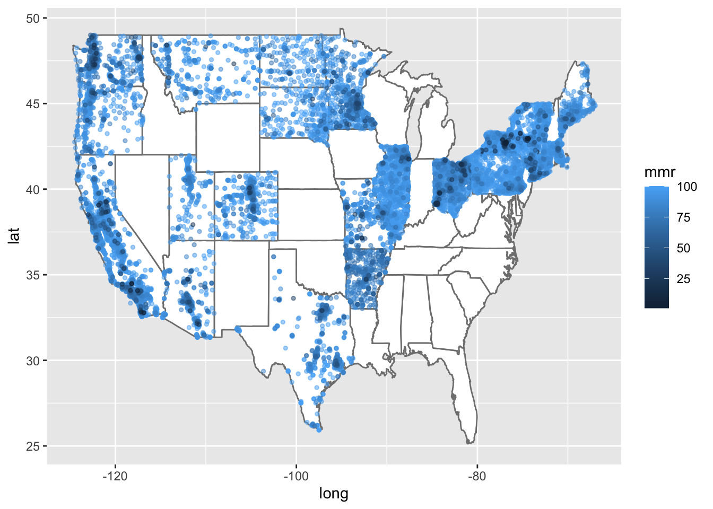
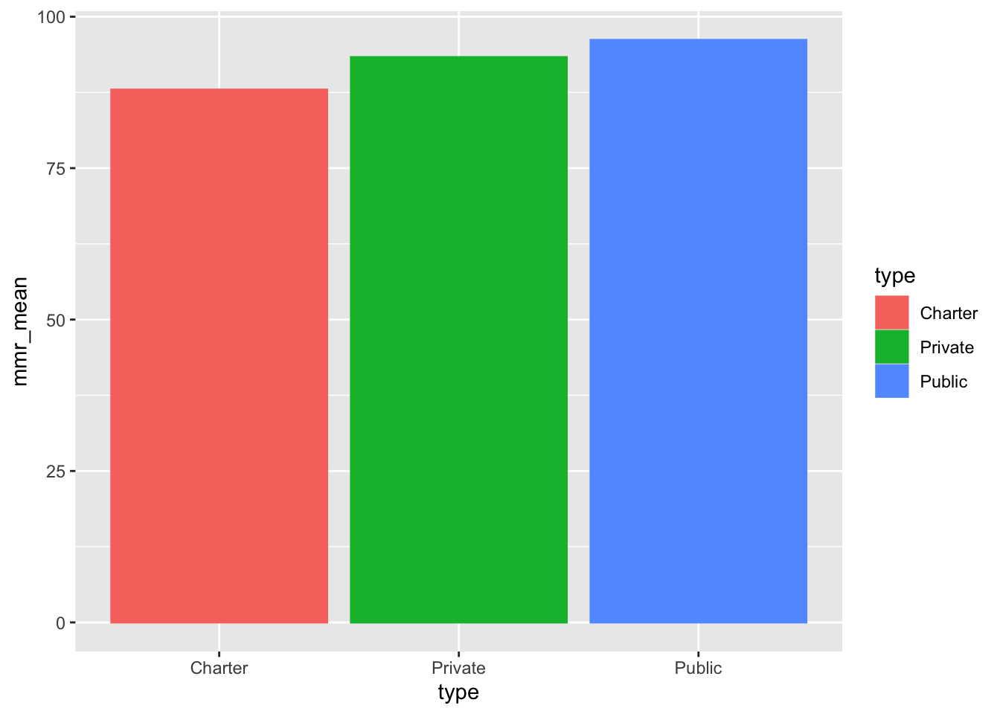
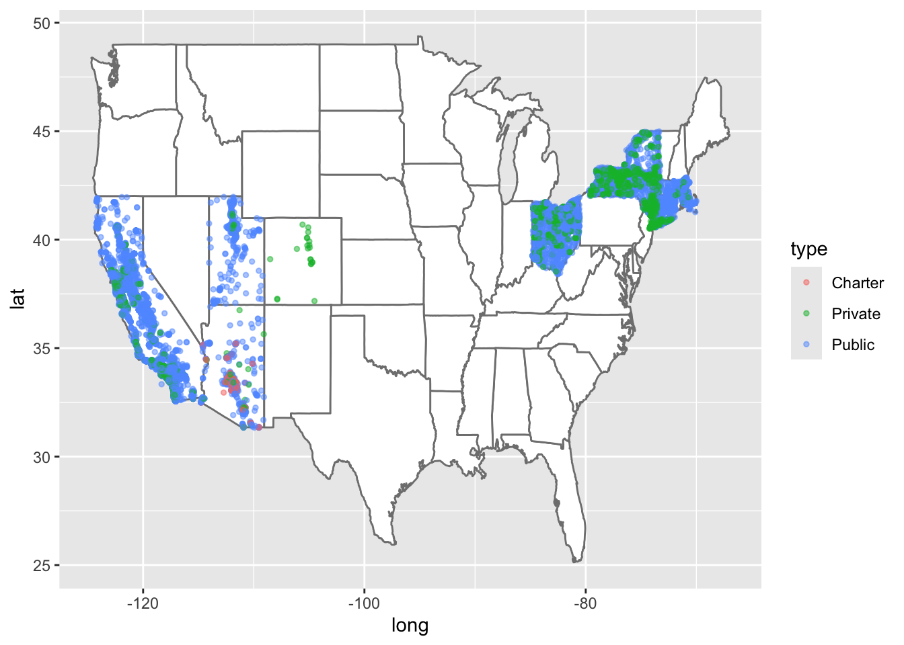

library(tidyverse)
library(tidyr)
library(tidytuesdayR)
library(maps)tuesdata <- tidytuesdayR::tt_load('2020-02-25')## ---- Compiling #TidyTuesday Information for 2020-02-25 ----
## --- There is 1 file available ---
##
##
## ── Downloading files ───────────────────────────────────────────────────────────
##
## 1 of 1: "measles.csv"tuesdata <- tidytuesdayR::tt_load(2020, week = 9)## ---- Compiling #TidyTuesday Information for 2020-02-25 ----
## --- There is 1 file available ---
##
##
## ── Downloading files ───────────────────────────────────────────────────────────
##
## 1 of 1: "measles.csv"measles <- tuesdata$measlesmeasles %>%
filter(mmr > 0) %>%
select(mmr, state) %>%
group_by(state) %>%
summarize(across(everything(), list(mean = mean))) %>%
arrange(desc(mmr_mean))## # A tibble: 21 × 2
## state mmr_mean
## <chr> <dbl>
## 1 Illinois 97.4
## 2 Massachusetts 97.0
## 3 Pennsylvania 96.9
## 4 Connecticut 96.8
## 5 California 96.4
## 6 New York 96.1
## 7 Utah 95.2
## 8 South Dakota 95.1
## 9 Vermont 94.6
## 10 Montana 94.4
## # ℹ 11 more rows# Get US map data
us_map <- map_data("state")
# Create the point map
ggplot() +
# Add US map background
geom_polygon(data = us_map,
aes(x = long, y = lat, group = group),
fill = "white",
color = "gray50") +
# Add points for each location, colored by number of teachers
geom_point(data = measles,
aes(x = lng,
y = lat,
color = mmr),
size = 1, # Smaller fixed size for all points
alpha = 0.8)## Warning: Removed 1549 rows containing missing values or values outside the scale range
## (`geom_point()`).
# Filtering data to just include continental US (for now)
measles_cont <- measles %>%
filter(lng < 0) %>%
filter(mmr > 0)
# Create the point map
ggplot() +
# Add US map background
geom_polygon(data = us_map,
aes(x = long, y = lat, group = group),
fill = "white",
color = "gray50") +
# Add points for each location, colored by number of teachers
geom_point(data = measles_cont,
aes(x = lng,
y = lat,
color = mmr),
size = 1, # Smaller fixed size for all points
alpha = 0.5)
mmr_type_summary <- measles_cont %>%
filter(mmr > 0) %>%
select(mmr, type) %>%
group_by(type) %>%
summarize(across(everything(), list(mean = mean))) %>%
arrange(desc(mmr_mean))measles_type <- measles_cont %>%
filter(type %in% c("Public", "Private", "Charter"))
mmr_type_summary <- measles_type %>%
filter(mmr > 0) %>%
select(mmr, type) %>%
group_by(type) %>%
summarize(across(everything(), list(mean = mean))) %>%
arrange(desc(mmr_mean))
mmr_type_summary %>%
ggplot(aes(x = type, y = mmr_mean, color = type, fill = type)) +
geom_col()
# Create the point map
ggplot() +
# Add US map background
geom_polygon(data = us_map,
aes(x = long, y = lat, group = group),
fill = "white",
color = "gray50") +
# Add points for each location, colored by number of teachers
geom_point(data = measles_type,
aes(x = lng,
y = lat,
color = type),
size = 1, # Smaller fixed size for all points
alpha = 0.5)